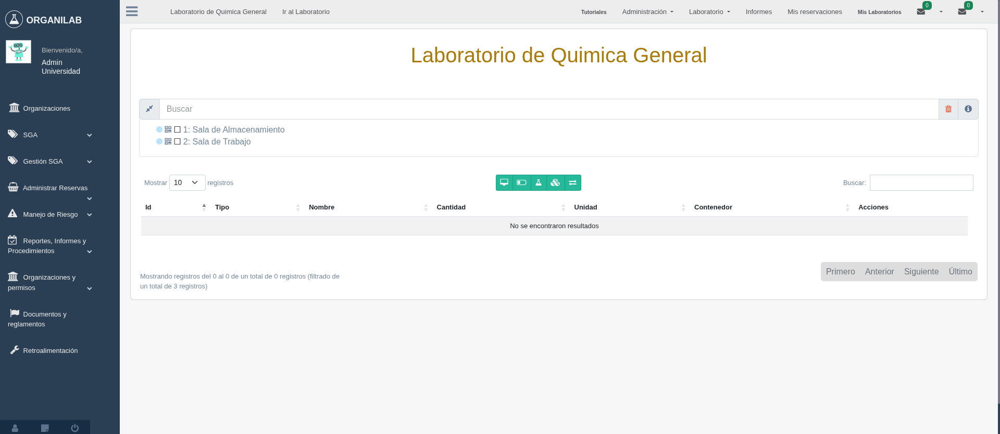

8. Gestión de Cajas
Las cajas son un mecanismo especial del inventario que permite agrupar unidades de un material bajo un mismo lote o fecha de vencimiento. Organilab gestiona el ciclo completo de las cajas: creación, agrupación por vencimiento, disminución de unidades y reserva por cantidad de cajas.
1. Crear una Caja
Las cajas se crean desde el formulario Crear material, que se muestra en la segunda ventana del proceso de creación de caja. Este formulario permite registrar el material junto con los datos específicos de la caja: cantidad de unidades y fecha de vencimiento.
Pasos para crear una caja
- Acceda al estante donde desea agregar la caja dentro del laboratorio.
- Haga clic en el botón Agregar objeto o en la opción correspondiente del menú del estante.
- En la segunda ventana — Crear material, ingrese los datos específicos de la caja: cantidad de unidades por caja y la fecha de vencimiento correspondiente.
- Confirme la creación. El sistema registrará la caja asociada al material en el estante.

Segunda ventana de creación de caja — formulario Crear material
2. Agrupación por Fecha de Vencimiento
Cuando se agregan cajas de un mismo material en distintos momentos, es fundamental agruparlas por fecha de vencimiento. Esto permite mantener la trazabilidad del inventario y aplicar correctamente la política FEFO (First Expired, First Out — primero en vencer, primero en salir).
Cómo agrupar cajas por fecha de vencimiento
- Si ya existe una caja del material con la misma fecha de vencimiento, selecciónela y utilice la opción Agregar unidades para sumar las nuevas unidades al lote existente.
3. Disminuir Unidades de una Caja
Existen dos formas de registrar el consumo o salida de unidades de una caja, según el alcance de la operación:
Opción A — Consumo parcial: disminuir por unidades
Use esta opción cuando desea retirar una cantidad específica de unidades de la caja sin eliminarla del inventario.
- Ubique la caja en el estante y selecciónela haciendo clic sobre ella.
- En el panel de la caja, seleccione la opción Disminuir cantidad o Consumo de unidades.
- Ingrese la cantidad de unidades a retirar y confirme la operación.
- El sistema actualizará el conteo de la caja y registrará el movimiento en el historial de inventario.
Opción B — Eliminación total: seleccionar todas las unidades
Use esta opción cuando la caja está completamente consumida o debe retirarse del inventario en su totalidad.
- Ubique la caja en el estante.
- Seleccione todas las unidades de la caja mediante la opción correspondiente en el panel.
- Confirme la eliminación. El sistema retirará completamente la caja del inventario y registrará el movimiento.
4. Reservar Cajas
Cuando un material gestionado en cajas necesita reservarse para una práctica, evento o protocolo, la reserva se realiza indicando la cantidad en términos de cajas, pudiendo ser un valor entero o decimal.
Pasos para reservar cajas
- Acceda al módulo de Reservaciones desde el menú principal del laboratorio.
- Cree o edite una reservación y agregue el material gestionado en cajas.
- En el campo de cantidad, ingrese el número de cajas a reservar. Se admiten valores decimales, por ejemplo: 2.5, 0.5, 3.
- Confirme la reservación. El sistema bloqueará la cantidad indicada del inventario disponible durante el período de la reserva.